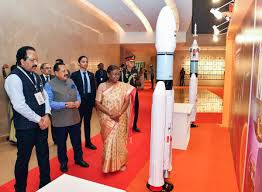

Implement school safety guidelines, Centre tells States
The guidelines have been issued by the Union Education Ministry and contain provisions to fix accountability on school managements
In view of protests over the alleged sexual assault of two four-year-old girls at a school in Badlapur near Mumbai last week, the Union Education Ministry has directed all States and Union Territories to implement its guidelines to ensure safety and security of children in schools.
The Ministry has also asked States and UTs to inform the status of notification of the guidelines that it had issued in 2021 in accordance with the Protection of Children against Sexual Offences (Pocso) Act.
.jpg)
‘Space sector contributed ₹20,000 crore to India’s GDP over the last decade’
The Space Day celebrations are to commemorate the first anniversary of the successful landing of the Chandrayaan-3 on August 23 last year.
India’s space sector has directly contributed about $24 billion (₹20,000 crore) to India’s Gross Domestic Product over the last decade. It has directly supported 96,000 jobs in the public and private sector. For every dollar produced by the space sector, there was a multiplier effect of $2.54 to the Indian economy and India’s space force was 2.5 times “more productive” than the country’s broader industrial workforce.

‘BHISHM Cubes’ aka portable hospital: India’s gift to Ukraine
The presentation of the BHISHM cubes has been one of the key highlights of the ongoing visit of Prime Minister Narendra Modi to war-affected Ukraine
External Affairs Minister Dr. S. Jaishankar on Friday (August 23, 2024) said that India has handed over 10 BHISHM cubes, which contain medical support equipment of 22 tonnes along with 10 generator sets.